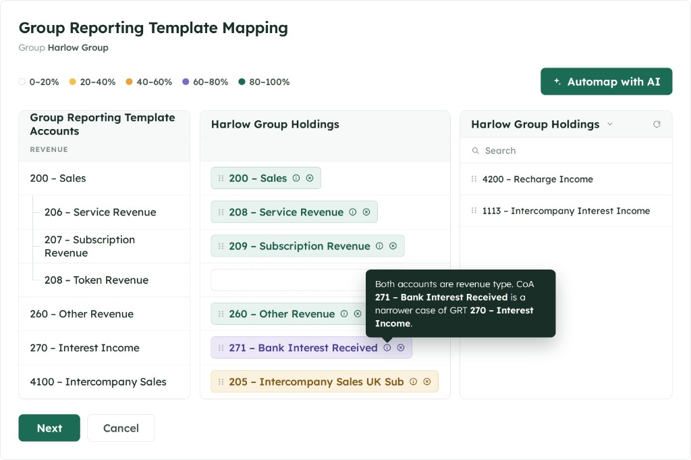
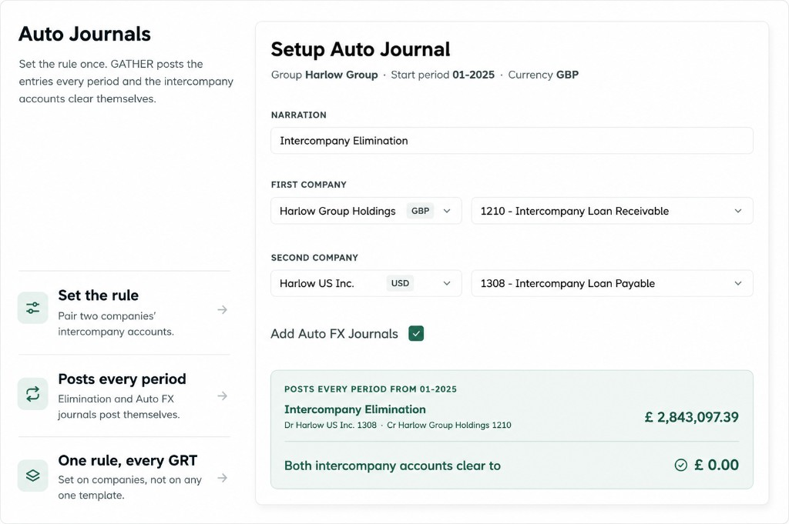
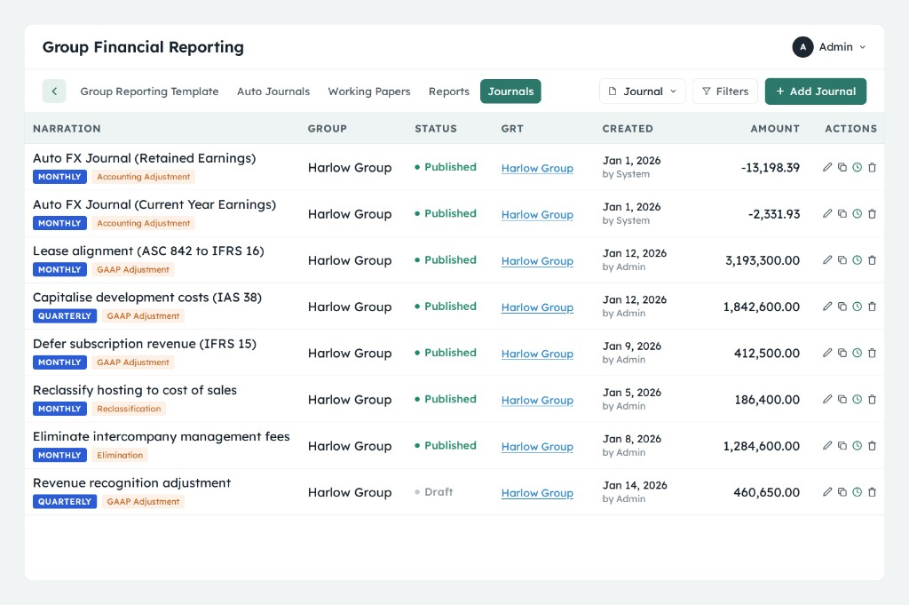
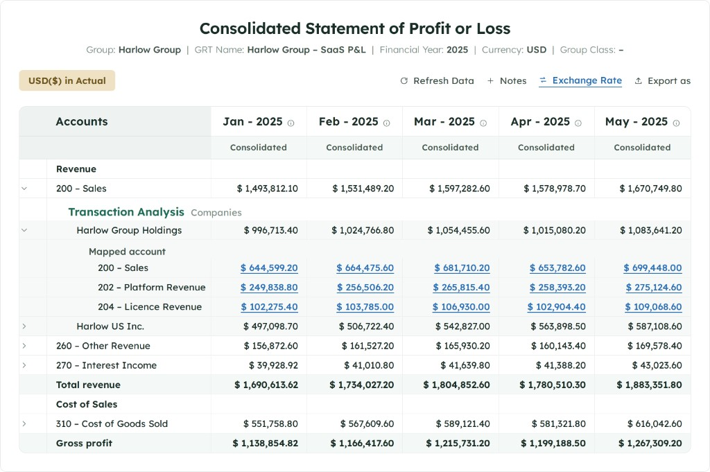

Module 02: Group Financial Reporting
Audit-ready Group Financial Reporting
A structured audit-ready workflow for consolidated Group Financial Reporting. Full data validation and visibility built into each step.

A structured audit-ready workflow for consolidated Group Financial Reporting. Full data validation and visibility built into each step.
From Group Reporting Template setup through AI assisted mapping, automated elimination journals,working papers review and validation, and final report generation, every step is connected in one auditable workflow.
Define your Group Reporting Template and map entity GL accounts from Xero and QuickBooks with GATHER AI assistance.
Automated consolidation journals feed into a central Working Papers hub to create a permanent audit trail for eliminations, adjustments, and FX in Reserves tracking.
Validate your financial data with multi-level drill down within your Working Papers - all the way from Group Financials to Transaction level data
Sign off your Working Papers once complete then create highly configurable Reports - with multi-level drill down to speed up variance analysis
Create Group Reporting Templates (GRT) according to your management team, investor and auditor requirements

Map each entity’s General Ledger to your GRT with a drag-and-drop interface. GATHER AI recommends matches from underlying Xero or QuickBooks GL codes with a confidence score and clear logic, so mapping is fast, consistent, fully reviewable, and underpinned by a clear audit trail.

Set up autojournals that generate elimination entries automatically each period, including intercompany eliminations, Foreign Exchange Differences in Reserves, and other recurring consolidation level adjustments.

Working Papers is the central hub for Finance teams to review and sign off on the integrity of their Group level close.

Fully integrated manual journal functionality allows Finance teams to make any further required adjustments to their Group level close - from GAAP adjustments to reclassifications

Produce consolidated group reports directly from validated working papers, with industry-specific templates and formats your board, investors, and auditors expect. Every report line connects back to source data through the same connected workflow.

Start your 30-day free trial, full access, no credit card required.